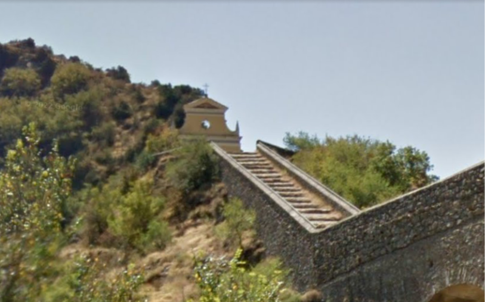

Organisé.
Les ZOM sont organisés, ce qui lui permet une certaine efficacité pour atteindre les objectifs de développelement de chacun. Ici personne n'est laissé de coté.
Vous recevrez très bientot un mot de passe pour entrer dans notre club, veuillez ne pas le communiquer sous peine de conséquences juridiques.
Vous venez de rentrer dans le prestigieux et très selectif club des ZOM. Si vous êtes ici c'est tout d'abord parce que vous croyez en notre projet, mais aussi en vous.
Sachez que si vous vous engagez sur cette voie, il ne faudra pas envisager de retour en arrière. Ne faiblissez pas fasse à la pression de l'extérieur. Nous vous contacterons par mail pour vous encadrer au mieux tout le long de votre parcours.
Retenez que rien, ni personne ne doit vous ôter le droit d'être la meilleure version de vous même. Les autres ne sont que des jaloux cupides et endoctrinés par une idéologie femino-gauchiste.
Dans notre organisation, nous misons sur la solidarité des membres. Vous ne serez pas abandonné, à partir de maintenant nous nous occuperont de vous. Toutefois il existe quelques règles à respecter pour que votre aventure parmis nous se passe dans les meilleures conditions.

N'ayez crainte vous êtes déjà l'un des notres. Cependant notre groupe possède une hièrarchie. Les membres les plus avancés de notre programme vous encadreront, et si vous en avait la chance vous pourrez être un jour à leur place et aider d'autres nouveaux membres plus tard. Remplissez ces quelques conditions et vous progresserez dans le hièrarchie plus vite que vous le penserez.
Vous recevrez un mail très prochainement pour vous indiquez ce que vous devrez faire et où vous devrez vous rendre après avoir remplis les conditions d'adhésion.
Contrairement à d'autres groupe de développement personnel le notre possède de nombreux avantages.
Les ZOM sont organisés, ce qui lui permet une certaine efficacité pour atteindre les objectifs de développelement de chacun. Ici personne n'est laissé de coté.
Nous nous contentons pas d'exister, nous nous faisons entendre. Beaucoup des membres dispersent nos idées sur les réseaux. Tout cela en gardant l'anonymat du groupe. Ensemble nous changeons les moeurs !
Les ZOM est un groupe à portée internationnale. Nos membres sont sur les cinq continents, et peuvent vous aidé n'importe où et n'importe quand.
Si vous progressez dans la hiérarchie il est possible de générer des profits à nos cotés. Nous mettons un point d'honneur à ce que tout travail soit récompensé.
Le début de votre ascension commence ici
Tous droits reservés
2019